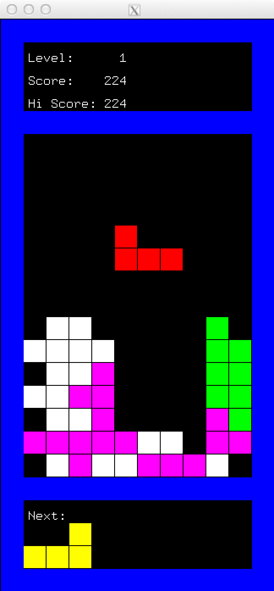

Experiences
2017
North America

Software Engineer Intern, Ads Measurement Input Team
- Working on offline conversion for Facebook Ads Advanced Measurement tool
Software Engineer Intern, Search Quality Team
- Built distributed data pipelines to generate training data and created the Visual Relevance search ranking model in TensorFlow
- Designed and implemented a user search log visualizer called Hubble from scratch using React/Redux and built back-end data pipelines using Scalding
- Worked on human evaluation pipeline for search experiments and added a web tool to launch human evaluation jobs
University of Waterloo
Undergraduate Research Assistant, Computer Science
- Worked on Political Science Text Classification for the Warcbase project with Prof. Jimmy Lin, Ziquan (Zack) Wang and Yue Li (Shirley) Du using various Machine Learning and Big Data techniques
2016
North America

Wish
Software Engineer Intern, Platform Team
- Full-stack web development focusing on improving and adding new features to Wish's Merchant Dashboard using Tornado, MongoDB, Backbone, RequireJS and jQuery
- Major features added include Merchant Support and Report Product impacting millions of products and merchants
- Built tools to detect fraudulent merchants and customers by analyzing purchase and refund history using Hive and Python
University of Waterloo
Undergraduate Research Assistant, Computer Science
- Worked with Prof. Frank Tompa and Chi (Ace) Zhang to enhance both front-end and back-end functionalities of the web application ODAS (Optometry Data Analysis System) using Django, jQuery, Highcharts.js, Bootstrap and MySQL

Samsung Research America
Software Engineer Intern, Advanced Processor Lab Team
- Developed an enterprise web application called Electric Commander (EC) Monitor to enhance EC with analytical and statistical features using Symfony, Python, Perl, MySQL, jQuery and React.js
- Created EC as well as employee performance charts for the management team by analyzing and visualizing EC’s database using D3 and Highcharts.js
- Implemented Live Job Build Tracker, a real time EC job performance monitoring web application, which is used by the entire infrastructure team with more than 100 employees every day
2015
Canada
University of Waterloo
Undergraduate Research Assistant, Computer Science
- Created a web application called ODAS in collaboration with Prof. Frank Tompa and Ziquan (Zack) Wang that helped manage and visualize optometric records and increase efficiency in generating optometric reports by 10 times

Vena Solutions
Software Development Intern, DevOps Team
- Set up Percona XtraDB Cluster on EC2 using Ansible and MySQL to improve database performance and reliability by 5%
- Developed software tools in Ansible and Java to effectively catch memory errors in back-end in both single-thread and multi-thread context
- Improved RESTful API test coverage for back-end by 10% via Postman using JavaScript
Mini-Twitter
Open source Twitter-style social networking web app built on Ruby on Rails / HTML5 / CSS3 / PostgreSQL
2014
Canada

Genesys Laboratories Canada Inc.
Quality Assurance Intern, Media Control Platform Team
- Carried out both automated and manual load and scale tests on media control platform using Bash, Perl and CGI
- Implemented automatic reporting system in C++ that provides platform and test performance analysis to team leads
